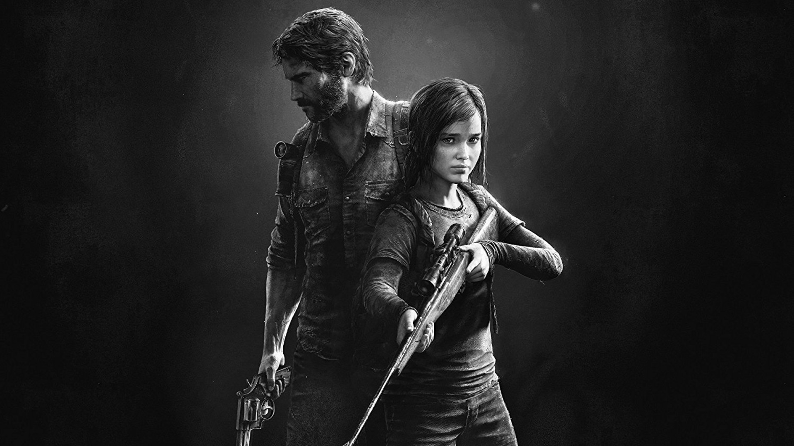
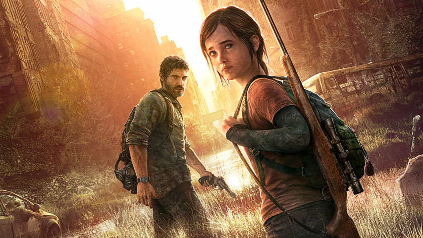

The Last of Us TV show goes straight to series at HBO By Jordan Gerblick 20/11/2020
HBO is giving The Last of Us TV show a full series order, clearing the way for an entire season instead of just a pilot episode.
The series is being written and executive produced by Neil Druckmann, creative director on The Last of Us 1 and 2, as well as on Uncharted 4. Craig Mazin, who created and wrote the 2019 HBO series Chernobyl, is attached as co-writer and executive producer. Chernobyl and Game of Thrones executive producer Carolyn Strauss will also help to produce the series along with Naughty Dog's Evan Wells and PlayStation Productions' Asad Qizilbash and Carter Swan.
"Craig and Neil are visionaries in a league of their own," HBO exec Francesca Orsi said in the announcement. "With them at the helm alongside the incomparable Carolyn Strauss, this series is sure to resonate with both die-hard fans of The Last of Us games and newcomers to this genre-defining saga. We're delighted to partner with Naughty Dog, Word Games, Sony and PlayStation to adapt this epic, powerfully immersive story.

The Last of Us TV series is based on the first game, with Joel smuggling a 14-year-old Ellie out of a quarantine zone. It isn't clear if it'll adapt events from The Last of Us 2, but given the full series order, it's certainly not out of the question.
With things still very early in development, we don't have a release date for the series just yet, but the series order from HBO is a surefire sign that the studio is moving full-speed ahead with The Last of US TV show.